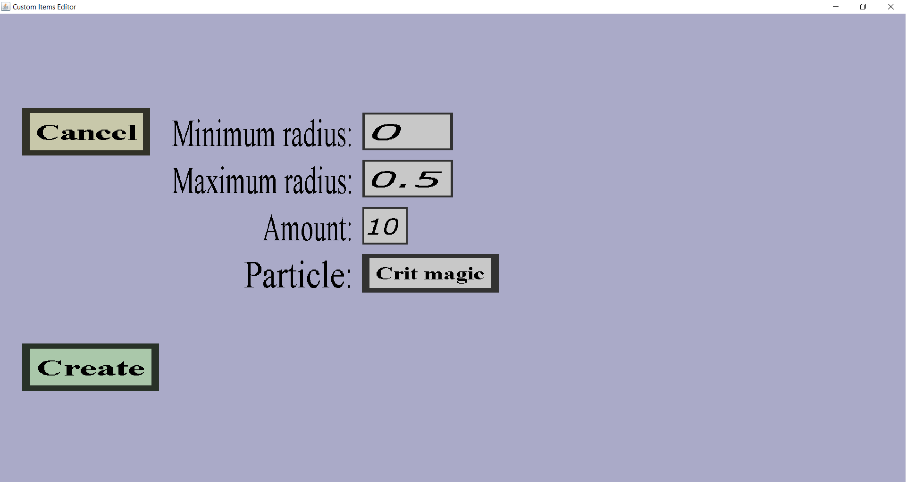

The particles effect edit menu can be used to add simple particle effects to custom projectiles or modify the
configuration of existing particle effects. This menu only supports 'simple' particles without particle-specific
configuration. It should look like this:

There should be a 'Cancel' button and an 'Apply' or 'Create' button.
Also, there should be an edit field for the minimum/maximum radius, amount and a button to choose the particle.
-
The 'Cancel' button will take you back to the effects overview you came
from without keeping any changes or adding the new effect to the list.
-
If you are editing an existing particles effect, there will be an 'Apply' button which will take
you back to the effects overview you came from while keeping all changes
you made in this menu.
-
If you are adding a new particles effect, there will be a 'Create' button which will take
you back to the effects overview you came from and add this new command
effect to the effect list.
-
The minimum/maximum radius determine how far the particles will spawn away from the custom projectile.
For each particle spawned, its radius will be randomly chosen between Minimum radius and Maximum radius.
Its radius is the distance between the location of the particle and the location of the custom projectile
in meters (1 block is 1 meter x 1 meter x 1 meter).
-
The Amount determines how many particles will be spawned each time this effect is performed.
So if you keep the Amount at 10, the particle will be spawned 10 times each time this effect
is performed. If the minimum/maximum radius are not 0, the particles will be spawned at slightly
different locations.
-
The particle button can be used to choose which particle should be spawned when this effect is performed.
The text on the button shows the currently selected particle. To change this, you need to click on the
button, which should take you to a menu that has a cancel button and a button for every particle type.
Clicking 'Cancel' in that menu will take you back to this menu without changing the selected particle
and clicking on any other button will change the selected particle to the corresponding particle of that
button. For most particles, you will need to scroll down because they don't all fit on the screen at
the same time.